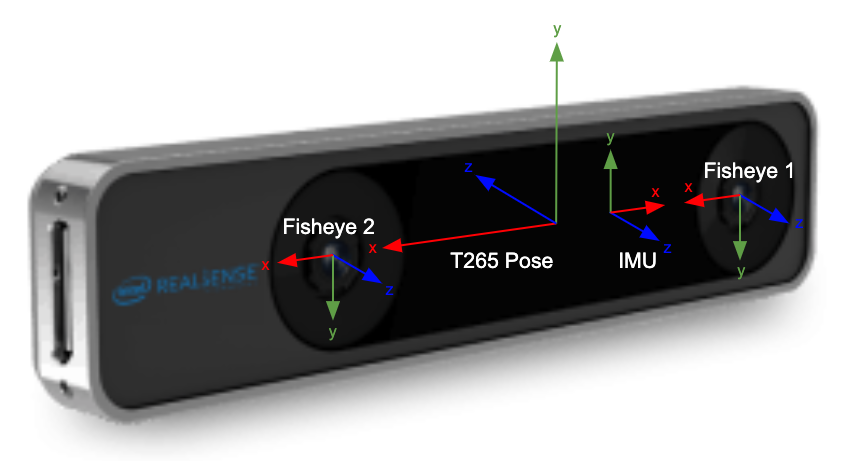
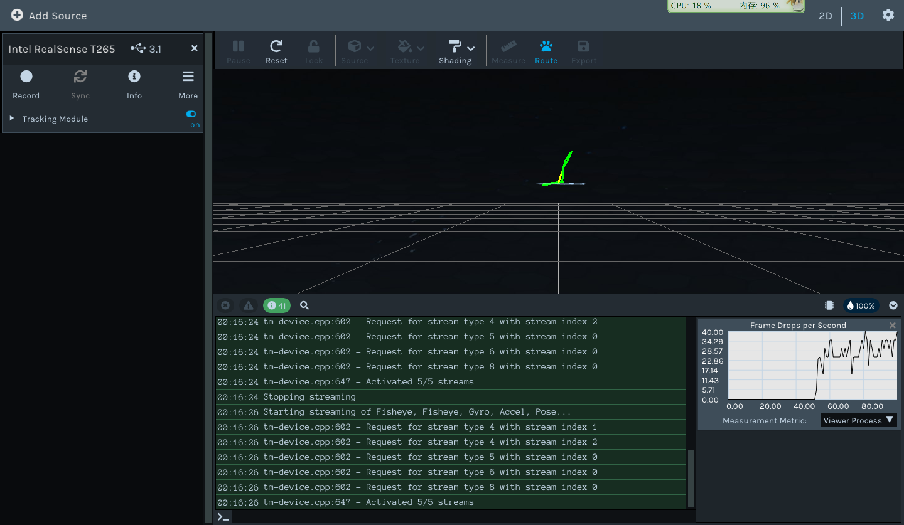
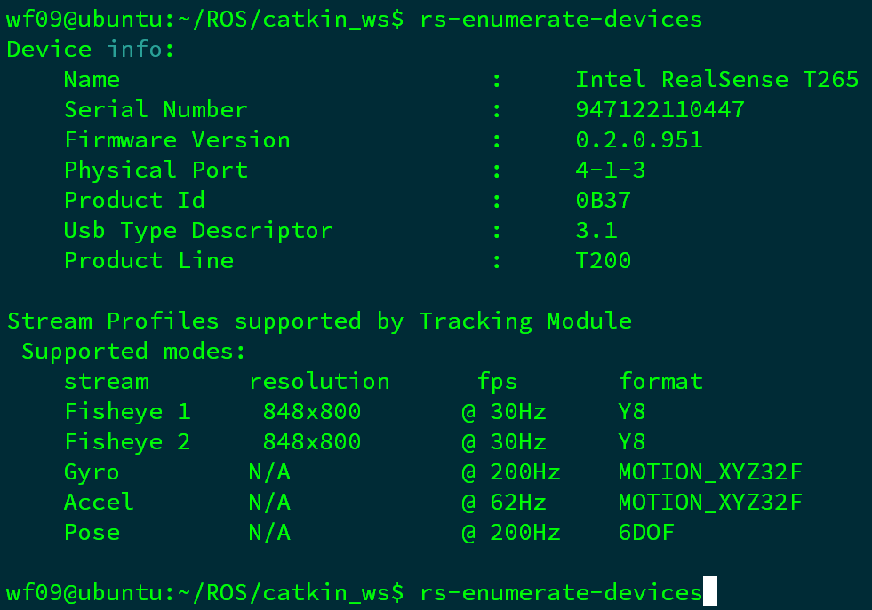
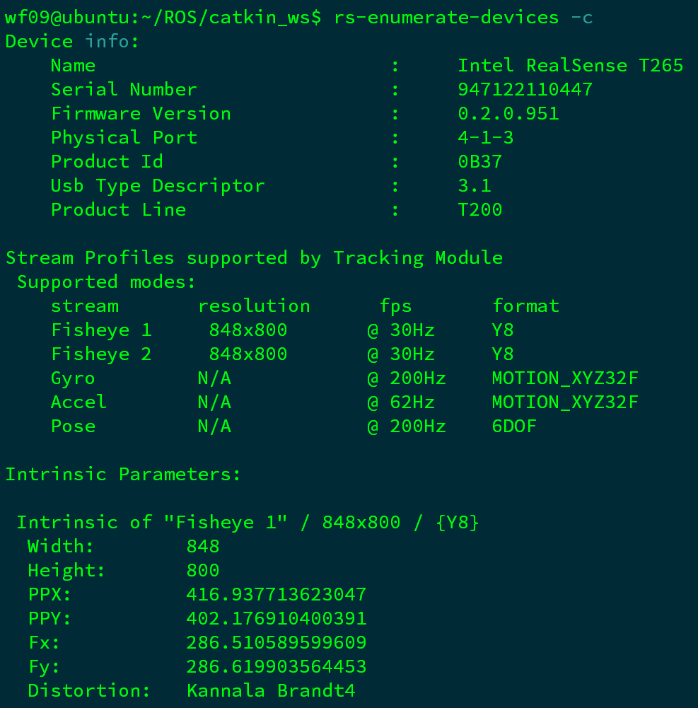
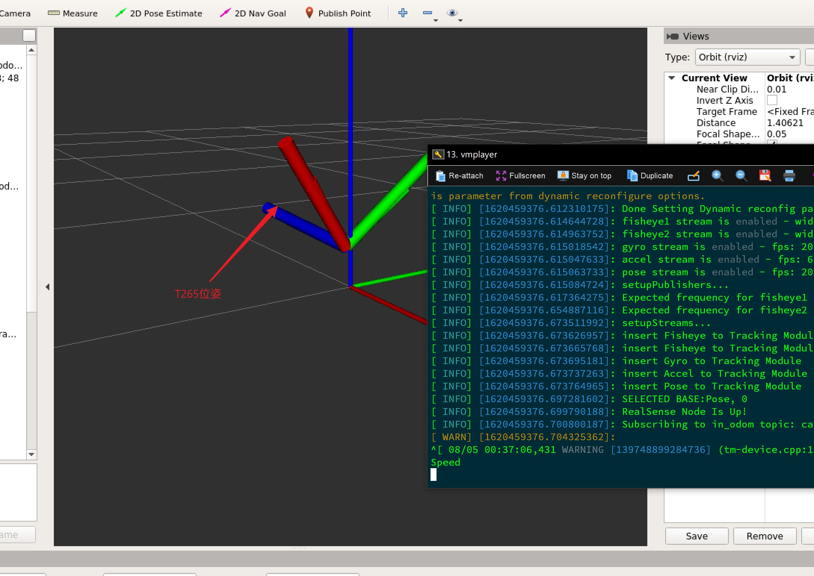
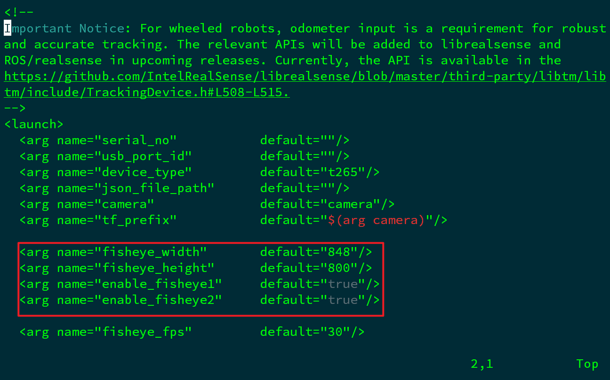
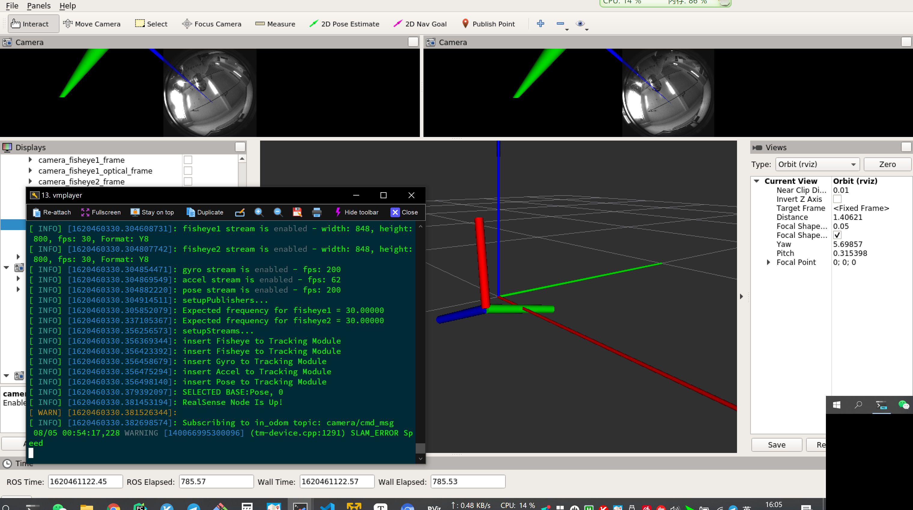

ROS实战（四）｜Intel Realsense T265
摘要：英特尔® 实感™ 追踪摄像头 T265 是一款全新的独立同步定位与建图设备，可用于机器人、无人机等领域。本文主要介绍了如何在ubuntu系统上安装Intel Realsense T265追踪摄像头。
关键词：T265，ROS
T265参数
- T265采用了2视觉处理单元（VPU），V-SLAM算法可以直接在VPU上运行，可直接输出相机位姿；
- T265使用了双目鱼眼相机，分辨率848*800，刷新频率30Hz，可以生成单色图像，视场角163(±5°)；
- 惯性测量单元（IMU）型号为BM1055；
- 相机与IMU的参数都保存了传感器中，可以通过示例直接读取相机的内参和相机与IMU之间的外参；
- 相机外形尺寸108x24.5x12.5mm

T265开发环境搭建
注册公钥
1 | sudo apt-key adv --keyserver keys.gnupg.net --recv-key F6E65AC044F831AC80A06380C8B3A55A6F3EFCDE || sudo apt-key adv --keyserver hkp://keyserver.ubuntu.com:80 --recv-key F6E65AC044F831AC80A06380C8B3A55A6F3EFCDE |
添加库
1 | sudo add-apt-repository "deb https://librealsense.intel.com/Debian/apt-repo $(lsb_release -sc) main" -u |
安装库
1 | sudo apt-get install librealsense2-dkms |
以上两行将部署 librealsense2 udev 规则，构建并激活内核模块，运行时库以及可执行的演示和工具。
安装开发库（可选）
1 | sudo apt-get install librealsense2-dev |
安装了dev软件包后，可以使用g++ -std=c++11 filename.cpp -lrealsense2或者在IDE中使用librealsense2编译应用程序。
检查安装是否成功
运行
1 | realsense-viewer |
系统会自动打开一个窗口

一旦速度过快，T265输出的位姿就会飞掉。
读取T265内外参数信息
T265在出厂前就对相机进行了标定，每个相机内部都带有相机的内参和外参，终端输入以下命令，即可读取T265的配置信息
1 | rs-enumerate-devices |

如果需要读取相机内参和外参，以及IMU的参数可以使用如下命令（添加 -c 参数）
1 | rs-enumerate-devices -c |

使用ROS包读取T265数据
使用环境ROS melodic 版本
安装依赖
1 | sudo apt-get install ros-$ROS_DISTRO-ddynamic-reconfigure |
下载安装ROS包 realsense-ros
1 | cd ~/catkin_ws/src |
启动测试demo，即可看到T265的位姿数据
1 | source devel/setup.bash |

如果需要查看鱼眼相机图像数据，则需要对rs_t265.launch文件进行修改，使能图像输出

运行
1 | roslaunch realsense2_camera demo_t265.launch |
